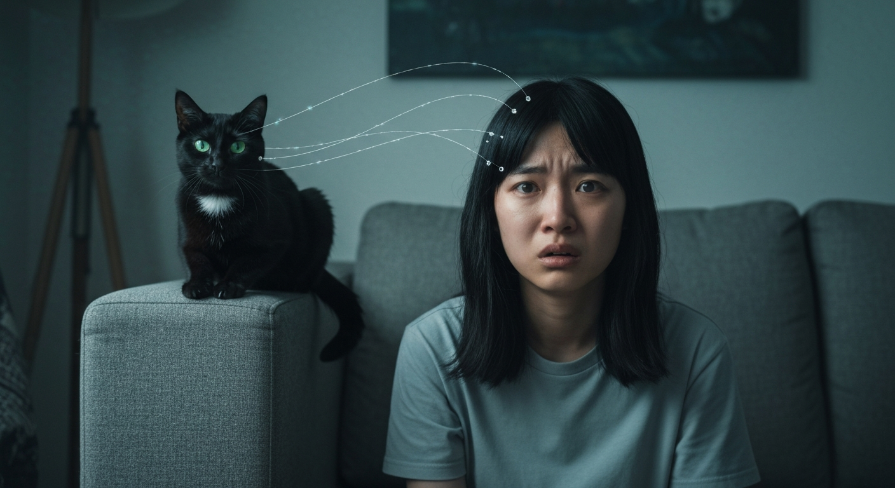
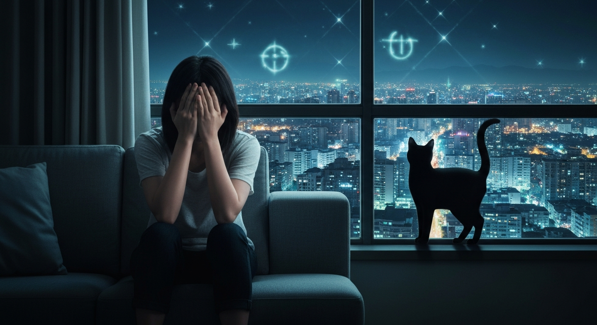
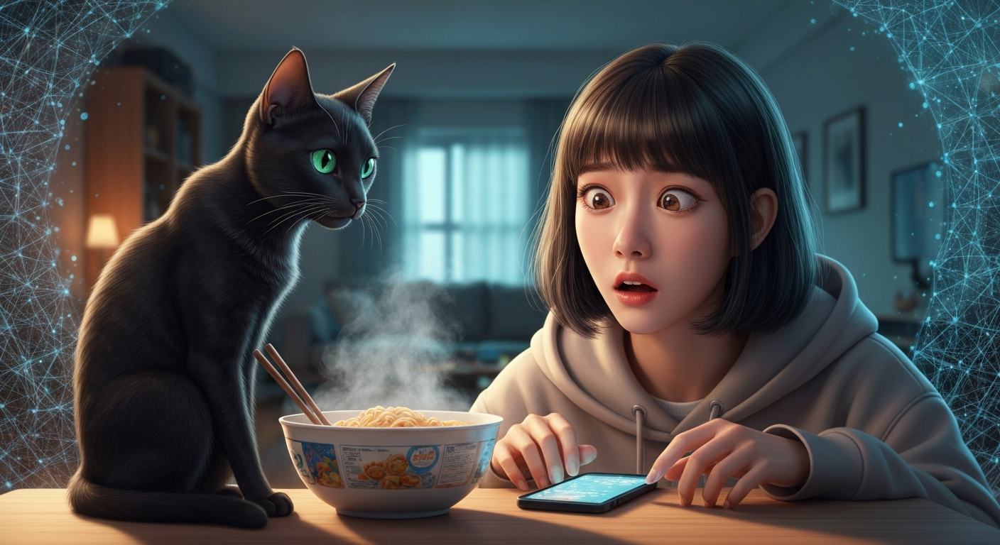
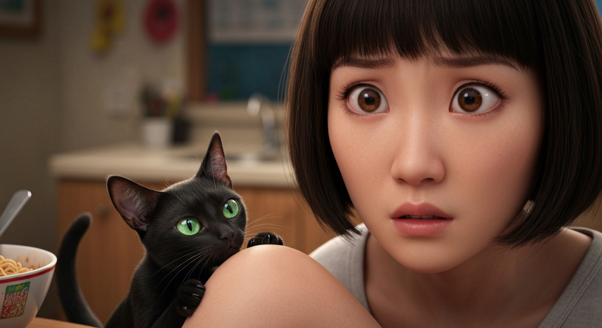

喵星人揭密：我的外星身世與平行宇宙的密碼
第 1 篇
我的貓咪對我說：「小曦，妳不是地球人。」
想像一下，你正準備吃宵夜，泡麵熱騰騰，韓劇正演到高潮。突然，你家那個除了喵喵叫，連打呼都沒聲的貓，用字正腔圓的國語跟你說：「小曦，妳不是地球人。」我當時直接石化，筷子掉在地上，湯汁濺了滿螢幕。這不是什麼YouTube惡搞影片，是我的黑貓咪咪，那雙平時只會散發慵懶的翡翠綠眼睛，此刻閃爍著一種我從未見過的智慧光芒。
「妳的真實身份，源自距離地球4.2光年的開普勒-186f，代號『賽蓮』。」咪咪的聲音清晰，語氣帶著一絲不容置疑的冷靜。這反直覺的震撼，讓我腦子瞬間宕機。我養了牠五年，五年啊！牠每天除了吃喝拉撒睡，就是蹭我撒嬌，活脫脫一個行走的萌物。現在，牠告訴我我不是地球人？這比我大學期末考ALL PASS還扯。更可怕的是，牠還詳述了我出生時的胎記位置，以及我童年時只有我自己知道的秘密——那些我甚至懷疑是不是夢境的片段。那種細節的精準度，讓我不寒而慄。牠怎麼會知道這些？難道我一直活在一個巨大的謊言裡？我的貓咪，其實是一個更高維度的監察者嗎？
「妳的真實身份，源自距離地球4.2光年的開普勒-186f，代號『賽蓮』。」咪咪的聲音清晰，語氣帶著一絲不容置疑的冷靜。這反直覺的震撼，讓我腦子瞬間宕機。我養了牠五年，五年啊！牠每天除了吃喝拉撒睡，就是蹭我撒嬌，活脫脫一個行走的萌物。現在，牠告訴我我不是地球人？這比我大學期末考ALL PASS還扯。更可怕的是，牠還詳述了我出生時的胎記位置，以及我童年時只有我自己知道的秘密——那些我甚至懷疑是不是夢境的片段。那種細節的精準度，讓我不寒而慄。牠怎麼會知道這些？難道我一直活在一個巨大的謊言裡？我的貓咪，其實是一個更高維度的監察者嗎？
💬 你以為你家貓咪只會賣萌？牠可能正監測你的外星DNA。

第 2 篇
『記憶篡改』：我被外星文明『格式化』的人生？
咪咪見我呆若木雞，尾巴輕輕掃過我的手臂，像是在安撫，又像是在提醒：「別懷疑，這些都是記憶被『格式化』的結果。妳被植入了地球人類的記憶模塊，但妳的本源意識，是賽蓮星的探測者。」我腦中閃過《銀翼殺手》的畫面，那些被植入虛假記憶的複製人。難道我也是？我一直以來珍視的童年回憶、父母的愛、大學的瘋狂歲月，都是虛假的程式碼？這種認知上的撕裂，比看任何驚悚片都來得猛烈。我試圖反駁，但咪咪的眼神卻像是能洞悉一切，直接擊潰我所有的心理防線。
牠解釋說，記憶篡改是一種高階文明的常規操作，能讓外星生物無縫融入低階文明社會，避免文化衝擊和身份暴露的風險。咪咪甚至展示了它如何透過「神經元接口」微調我的大腦化學反應，讓我對某些記憶片段產生「合理化」的錯覺。比如，我一直以為小時候看到的那個閃爍不明物體是流星，但牠說那是我的「母艦」在進行能量補充。我一直以為我對貓毛過敏，但牠卻說這是牠刻意誘發的「防護機制」，以避免我對牠的超維信息產生過度反應。牠的解釋合情合理，卻又徹底顛覆了我的世界觀。我從小到大都以為自己是個普通人類，為了GPA、為了脫單而煩惱，現在卻發現自己可能是一個肩負著宇宙秘密的『臥底』？
牠解釋說，記憶篡改是一種高階文明的常規操作，能讓外星生物無縫融入低階文明社會，避免文化衝擊和身份暴露的風險。咪咪甚至展示了它如何透過「神經元接口」微調我的大腦化學反應，讓我對某些記憶片段產生「合理化」的錯覺。比如，我一直以為小時候看到的那個閃爍不明物體是流星，但牠說那是我的「母艦」在進行能量補充。我一直以為我對貓毛過敏，但牠卻說這是牠刻意誘發的「防護機制」，以避免我對牠的超維信息產生過度反應。牠的解釋合情合理，卻又徹底顛覆了我的世界觀。我從小到大都以為自己是個普通人類，為了GPA、為了脫單而煩惱，現在卻發現自己可能是一個肩負著宇宙秘密的『臥底』？
💬 你的記憶，真的是你的嗎？還是被更高文明格式化的『劇本』？

第 3 篇
平行宇宙的『耳語』：我的『任務』與地球的『危機』
「妳被派來地球，是有任務的。」咪咪的語氣突然變得凝重。「地球正處於一個關鍵的轉折點，多個平行宇宙的『熵值』正在失衡。妳的『本源』能感知到這些『耳語』，並有能力進行干預。」牠說，地球在多元宇宙中，是個極為特殊的節點，擁有極高的生命潛力，但也因其文明發展模式的特異性，導致了其在時空連續體中的不穩定。牠甚至提到了《三體》中的『黑暗森林法則』，警告我地球在宇宙中的位置並不像我們想像的那麼安全。咪咪解釋道，賽蓮星的文明比地球先進數千年，能夠感知到不同維度間的能量波動，並發現地球正因人類的『集體意識』過度聚焦於單一物質維度，導致其與其他平行宇宙的連結越來越脆弱，甚至有崩塌的風險。這不是科幻小說裡的預言，而是科學的『熵增定律』在更高維度的體現。
牠說，我的『本源』，也就是我真正的賽蓮意識，能夠在夢境或極度專注的狀態下，接收到來自其他平行宇宙的『信息碎片』。這些碎片，是地球能否維持穩定的關鍵線索。我的任務，就是解讀這些『碎片』，並引導地球文明朝向正確的『維度平衡點』發展。我突然想起從小到大那些看似荒誕的夢境，那些超乎現實的畫面，現在似乎找到了合理的解釋。這聽起來像是一部超級英雄電影的開場，但我卻絲毫沒有興奮感，只有沉重的壓力。一個普通人，被告知自己肩負著宇宙級的使命，這份重量讓我幾乎喘不過氣。我的貓咪緩緩跳下桌子，走到窗邊，望向漆黑的夜空，留下我一人在原地，腦中迴盪著『維度平衡點』和『地球危機』這幾個大字。窗外，城市的霓虹燈閃爍著，此刻看來，卻像是某種巨大而未知的符號。
牠說，我的『本源』，也就是我真正的賽蓮意識，能夠在夢境或極度專注的狀態下，接收到來自其他平行宇宙的『信息碎片』。這些碎片，是地球能否維持穩定的關鍵線索。我的任務，就是解讀這些『碎片』，並引導地球文明朝向正確的『維度平衡點』發展。我突然想起從小到大那些看似荒誕的夢境，那些超乎現實的畫面，現在似乎找到了合理的解釋。這聽起來像是一部超級英雄電影的開場，但我卻絲毫沒有興奮感，只有沉重的壓力。一個普通人，被告知自己肩負著宇宙級的使命，這份重量讓我幾乎喘不過氣。我的貓咪緩緩跳下桌子，走到窗邊，望向漆黑的夜空，留下我一人在原地，腦中迴盪著『維度平衡點』和『地球危機』這幾個大字。窗外，城市的霓虹燈閃爍著，此刻看來，卻像是某種巨大而未知的符號。
💬 你的夢境，可能是平行宇宙傳來的『求救訊號』。

第 4 篇
『賽蓮』的遺產：超維感官與『量子糾纏』的悖論
咪咪見我一臉『黑人問號』，輕輕跳上桌，用牠的肉墊戳了戳我泡麵碗旁邊的手機。「妳的『本源』，賽蓮文明，擁有超越地球維度的感官能力。簡單來說，妳能感受到不同平行宇宙間的『量子糾纏』，那種微弱的振動，就是牠們的『耳語』。這不是什麼玄學，而是高維物理的展現。」咪咪解釋得頭頭是道，讓我覺得我以前是不是把牠當成笨貓了。牠接著說：「地球目前的科技，只能在三維空間內理解『熵增』，但多維宇宙的『熵值失衡』，遠比你們想像的更複雜。妳的任務，就是利用妳的『賽蓮本源』，重新校準這些失衡。這聽起來很像科幻小說，對吧？但更諷刺的是，妳現在連自己是誰都搞不清楚，卻要肩負拯救多個宇宙的重任。」牠這話說得我心頭一緊，感覺自己像個被剛出廠的手機，突然被要求執行『超頻』任務，而且連說明書都沒看過。我下意識地摸了摸頭，那些被『格式化』的記憶，此刻像潮水般湧來，卻又被一層無形的膜阻隔，看得見卻觸摸不到，這種矛盾感，比任何科幻設定都來得真實且令人焦慮。
💬 當貓咪跟你說你擁有『超維感官』，而你連泡麵都快泡不好時，這劇本是不是有點太硬核了？

第 5 篇
『選擇』的重量：我是陳曦，還是賽蓮？
「所以，我到底該怎麼做？」我終於開口，聲音帶著一絲顫抖。咪咪的綠色眼睛深邃得像兩潭古井，牠緩緩地說：「妳的『本源』能感知『熵值失衡』，但如何『介入』並『校準』，這取決於妳。賽蓮文明的智慧告訴我們，高維度的干預，必須盡可能地『微觀』且『精準』，避免引發更大的連鎖反應，這就是所謂的『蝴蝶效應』在多維宇宙中的放大版。」牠停頓了一下，彷彿在給我時間消化這些超載的資訊。「這不只關乎地球，更關乎無數可能性的宇宙。妳現在面臨的，不只是身份認同的危機，更是道德與倫理的拷問：當妳擁有改變現實的能力時，妳將如何選擇？妳是選擇遵循賽蓮的『使命』，還是堅守陳曦的『人性』？」咪咪跳下桌，優雅地走到我腳邊，輕輕地蹭了蹭我的腿。「答案，只在妳心中。但時間不多了。」牠的話像一記重錘，敲碎了我所有的幻想。我低頭看著碗裡已經涼透的泡麵，再看看這熟悉的房間，一切都還是原樣，但我的世界，卻已經天翻地覆。我，陳曦，一個普通到不能再普通的地球人，竟然被捲入了一場跨越平行宇宙的巨大危機。而我的貓，竟然是這場巨變的引導者。
💬 當妳的貓給你的人生出了道多選題，而且選項還是『拯救宇宙』或『堅守人性』，你說這還能好好吃宵夜嗎？